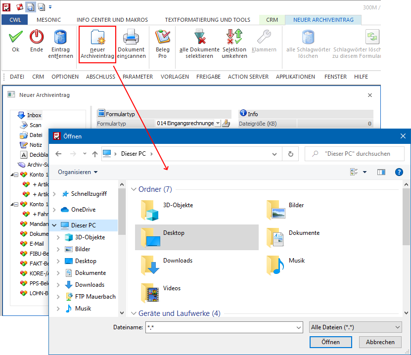
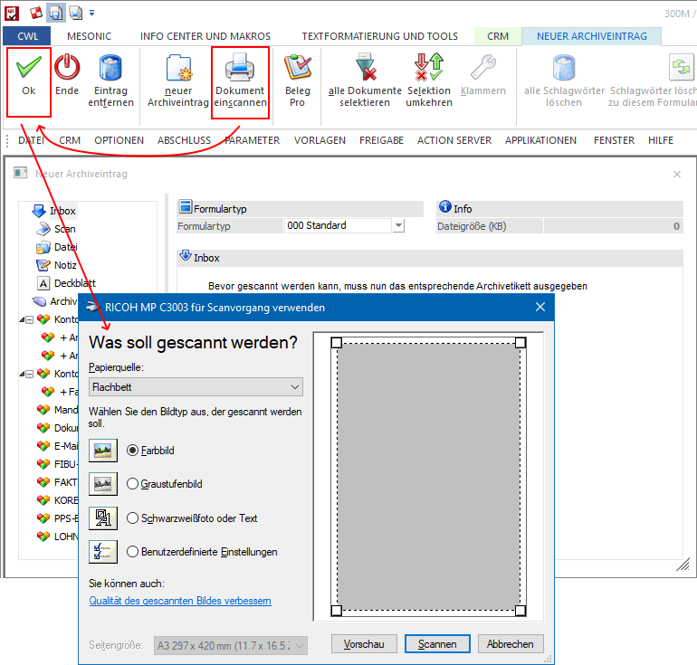
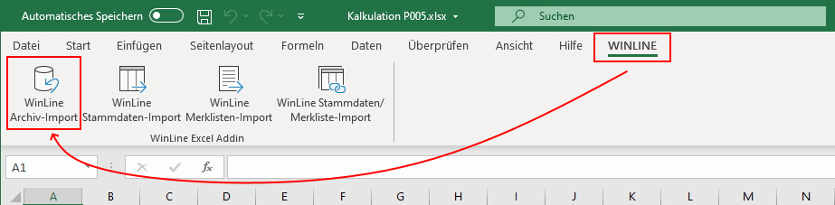
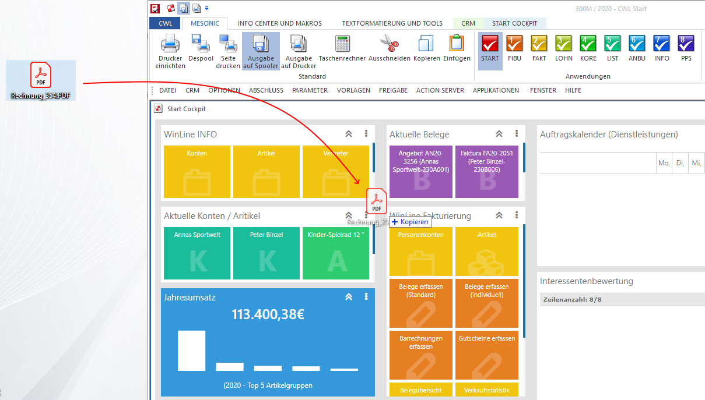

Die Übernahme eines Dokumentes / einer Datei in das Programm "Neuer Archiveintrag" kann auf unterschiedliche Weise erfolgen, wobei die maximale Dateigröße in den Archiv-Parametern zu definieren ist.
ü Button "neuer Archiveintrag"
Durch Anwahl des Buttons "neuer Archiveintrag"
kann in allen vorhandenen Verzeichnissen nach der gewünschten Datei / dem
gewünschten Dokument gesucht und anschließend übernommen
werden.

ü Button "Dokument einscannen"
Mit Hilfe des Buttons "Dokument einscannen"
(gefolgt von dem Button "Ok" bzw. der Taste F5) kann über die
TWAIN-Schnittstelle der Scanner angesprochen und die Scannersoftware gestartet
werden. Das erzeugte Dokument wird dann unter "Neuer Archiveintrag" dargestellt
(nähere Information zu diesem Thema entnehmen Sie bitte dem Kapitel Archivetiketten).

ü Button "WinLine Archiv"
In den Microsoft
Office-Produkten Word, Excel und Outlook wird - sofern die mesonic Addins
installiert wurden (WinLine START - Parameter - Einstellungen… - Register
"Allgemein") - der Button "WinLine Archiv-Import" angeboten. Durch Anwahl dieses
Buttons kann das aktuelle Dokument bzw. die aktuell markierte E-Mail an die
WinLine übergeben werden.
Hinweis
Die WinLine muss bei Anwahl des Buttons gestartet
sein.

ü Drag & Drop
Ein zu
archivierendes Dokument bzw. eine zu
archivierende Datei wird per Drag & Drop in WinLine oder direkt in das
Programm "Neuer Archiveintrag" fallen gelassen.
Hinweis
Auch mehrere Dateien / Dokumenten können so in
"einer" Aktion übergeben werden.
